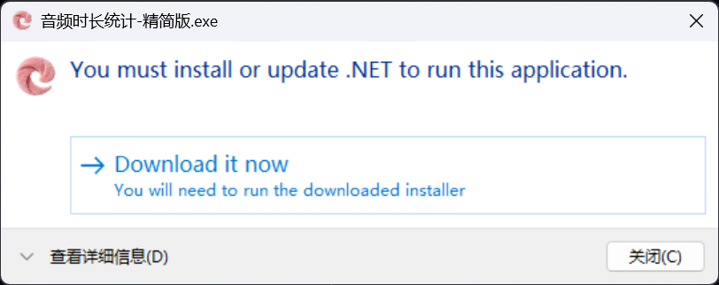

为音频工作者量身打造的效率工具
支持 MP3、WAV、FLAC、M4A、OGG、AAC 等主流音频格式，自动计算总时长。
支持按小时或分钟计费，自定义单价，实时显示总费用，结算更便捷。
生成精美的结算单截图，包含文件列表、时长、费用等信息，直接复制到剪贴板。
一键添加到 Windows 右键菜单，选中文件或文件夹即可快速统计。
支持直接拖拽文件或文件夹到窗口，批量添加音频文件。
文件列表自动按名称排序，清晰展示每个文件的时长信息。
三种方式，灵活选择
直接将音频文件或包含音频的文件夹拖拽到软件窗口中，即可自动识别并统计。
点击软件右上角「添加右键」按钮（需管理员权限），之后在文件或文件夹上右键即可看到「音频时长统计」选项。
点击底部「文件」或「文件夹」按钮，通过对话框选择要统计的音频。
根据需求选择适合的版本
如果运行轻量版时看到以下提示，说明您的电脑尚未安装 .NET 8 运行时：

点击弹窗中的 「Download it now」 按钮即可跳转到微软官网下载安装运行时，安装完成后即可正常使用。
持续优化，不断进步
时长显示格式优化为 00:00:00（时:分:秒），更清晰直观。
修复单文件选择时错误弹出提示的问题；窗口标题区分完整版/轻量版。
新增轻量版支持（约2MB），需用户自行安装 .NET 8 Desktop Runtime；升级框架至 .NET 8。
软件增加了左上角图标的超链接，指向软件发布页，方便用户及时更新最新版。
优化右上角按钮样式，改为现代商务风格；标题下方增加版本提示信息。
新增应用图标（logo.ico），统一软件窗口、exe文件和右键菜单图标显示。
优化界面布局，右上角设置按钮改为文字按钮；截图中"总费用"改为"总计金额"；信息栏改为单行显示。
增加超过100个文件的Windows系统限制提示，建议用户在文件夹上右键操作。
优化拖拽区域交互，提示图标和文字不再阻挡拖拽操作；发布为单exe便携版。
取消设置界面，截图样式默认使用渐变风格；增加版本号显示和开发者署名。
优化右键菜单多文件支持，使用命名管道实现单实例运行；支持选择超过15个文件。
新增截图功能，支持三种样式（简约/渐变/暗黑）；文件列表按名称自动排序。
初始版本发布，实现基础的音频时长统计、费用计算、右键菜单集成和拖拽添加功能。
Windows 10/11 (64位)
.NET 8 + WPF
完整版 152MB / 轻量版 2MB
MP3/WAV/FLAC/M4A/OGG/AAC 等